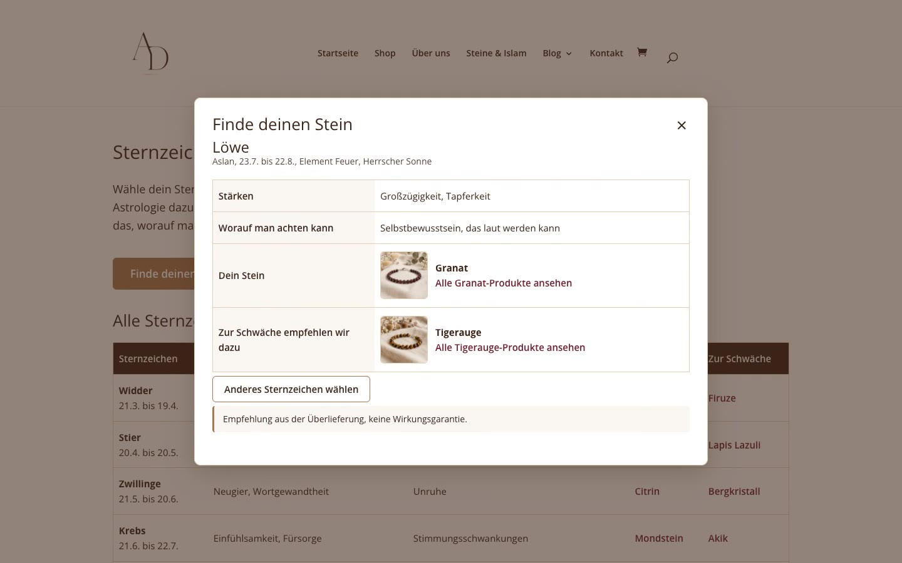

Ich habe einen Test-Shop für Natursteinschmuck mit WordPress und WooCommerce aufgebaut, um zu zeigen, wie ein Shop aussehen und funktionieren kann. Er war nie live, es wurde nichts verkauft.
Durchklick durch den Shop aus Sicht der Besucher.
Ein Shop mit klarer Marke, der zeigt, was ein Shopsystem-Administrator können muss: Produkte pflegen, Versand und Zahlung einrichten, Recht umsetzen, Sicherheit und Wartung planen. Verkauft werden sollte nur nach Deutschland und Österreich.
Bevor ich gebaut habe, habe ich mir den Markt angesehen: Wer verkauft Natursteinschmuck, und womit werben die Shops? Dabei ist mir eine Lücke aufgefallen. Es gibt viele Shops für Edelsteine und viele Seiten zu Astrologie, aber kaum jemanden, der Steine, Astrologie und die islamische Überlieferung zusammenbringt. Genau dort setzt der Shop an.
Aus dieser Marktlücke ist meine wichtigste Idee entstanden. Besucher sollen nicht einfach durch Produkte scrollen, sondern in zwei Klicks bei einem passenden Stein landen. Dafür habe ich eine Tabelle zur Orientierung aufgebaut: Zu jedem der 12 Sternzeichen gibt es Stärken, einen passenden Stein und einen zweiten Stein. Man wählt sein Sternzeichen, sieht das Ergebnis und kommt direkt zu den Produkten im Shop.
Jede Empfehlung ist als Empfehlung aus der Überlieferung gekennzeichnet, ohne Wirkungsversprechen. Der Finder verbindet Inhalt und Verkauf und unterscheidet den Shop von allem, was ich im Markt gesehen habe.

Ergebnisfenster des Finders im Shop, Beispiel Löwe.
| Thema | Meine Arbeit im Shop |
|---|---|
| Einrichtung und Administration | Shop mit WordPress und WooCommerce aufgebaut, 21 Produkte, Kategorien, Varianten |
| Themes, Design, Struktur | Divi, eigene Markenfarben, Startseite, Kaufbereich |
| Produkt-, Bestell- und Kundenmanagement | Preise, Sale, Gutscheine, Versand mit DHL, Zahlungsarten |
| Plugins | Recht, Suchmaschinen, Backup, Cookie-Hinweis, Login-Schutz, Zwischenspeicher |
| Recht | Impressum, Datenschutz, AGB, Widerruf auch online, Versandinfos |
| Logistik und Prozesse | Versandablauf, Wartungsplan, jede Änderung mit Backup und Rückweg |
| Payment und Sicherheit | Testzahlung, Login-Schutz, tägliches Backup |
| Analyse und Optimierung | Ladezeit am Handy von 87 auf 97, Prüfung der Produktseiten |
Ich habe beide Produktarten angelegt. Einfache Produkte wie ein Armband haben einen Preis und einen Bestand. Variable Produkte wie der Naturstein-Ring bieten mehrere Varianten, zum Beispiel drei Steine mit jeweils eigenem Preis. Die Varianten habe ich als anklickbare Felder gestaltet, damit Besucher nicht durch ein Auswahlmenü suchen müssen. Der Preis ändert sich direkt beim Auswählen.
Auf der Startseite habe ich einen Bereich mit Bestsellern eingebaut, damit Neukunden sofort sehen, was gut ankommt. Dazu habe ich zwei Aktionen eingerichtet:
Ein Shop muss gefunden werden. Für jedes Produkt habe ich ein Fokus-Keyword festgelegt, nach einer Recherche, wonach Menschen suchen. Titel, Beschreibung und Text sind darauf ausgerichtet. Die Texte sind klar und ehrlich geschrieben, damit sie vertrauenswürdig wirken. Auf der Finder-Seite gibt es Fragen und Antworten, damit auch KI-Suchen den Inhalt gut einordnen können.
Ich habe vorbereitet, wie der Shop im Betrieb gepflegt würde: Backup mit Rücksicherung, Login-Schutz und ein Update-Plan nach dem Prinzip erst Backup, dann Test. Das habe ich getestet, im echten Betrieb ist es nicht gelaufen, weil der Shop nie live war.
Im Kurs konnte ich mit WordPress und den freien Plugins arbeiten. Pro-Versionen standen mir nicht zur Verfügung. Deshalb sind einige Dinge als nächste Schritte vermerkt und nicht umgesetzt.
Wenn der Shop live gehen würde, wären das meine nächsten Änderungen:
Shopsystem Administrator (m/w/d) online, 180 Unterrichtseinheiten, Akademie für digitale Zukunft (Morphos GmbH). Teil der laufenden Weiterbildung zur E-Commerce-Managerin, voraussichtlicher Abschluss 03/2027.